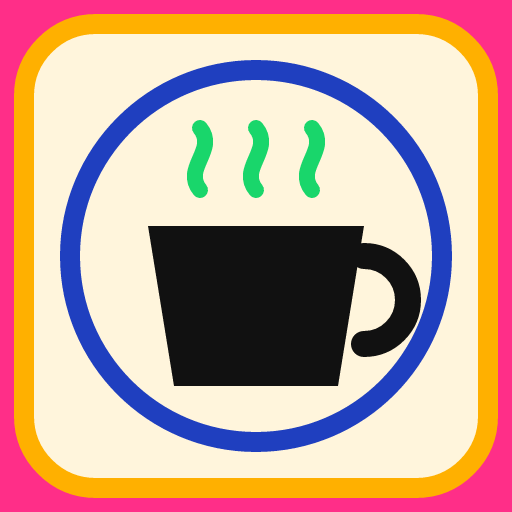

You want
chai.
Your map wants signal.
Download the city once.
OpenStreetMap
Overture Places
Curated list
Classify · dedupe
Lahore pack v1
454 places · JSON
Into IndexedDB,
on the phone
The needle still points.
N
heading
bearing
needle
Kadak Chai
GPS: where you are.
All 454 places are already on the phone.
Nearest one found in under 1 ms.
Magnetometer: which way you face.
needle
=
bearing
−
heading
Where are you?
The compass needs your location. It never leaves your phone.
Allow location
Asking your browser…
Skip for now
Downloading the Lahore pack…
454 places ready
Chai Kahan
چائے کہاں؟
Online
Offline
· Lahore pack v1
Dhabas only
Kadak Chai
کڑک چائے
dhaba
840 m
‹ Prev
1 of 5
Next ›
Chai time!
You are at Kadak Chai.
Open in Google Maps
Compass
Map
List
Add
Packs
Airplane mode.
No signal at all.
Chai Kahan
چائے کہاں؟
Download the city once. The compass works with nothing.

musaabjaved.com